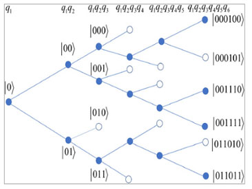

Sabre Kais Group
Quantum Information and Quantum Computation
Characterization of Quantum States Based on Creation Complexity
The creation complexity of a quantum state is the minimum number of elementary gates required to create it from a basic initial state. The creation complexity of quantum states is closely related to the complexity of quantum circuits, which is crucial in developing efficient quantum algorithms that can outperform classical algorithms. A major question unanswered so far is what quantum states can be created with a number of elementary gates that scale polynomially with the number of qubits. In this work, it is first shown that for an entirely general quantum state it is exponentially hard (requires a number of steps that scales exponentially with the number of qubits) to determine if the creation complexity is polynomial. Then, it is shown that it is possible for a large class of quantum states with polynomial creation complexity to have common coefficient features such that, given any candidate quantum state, an efficient coefficient sampling procedure can be designed to determine if the state belongs to the class or not with arbitrarily high success probability. Consequently, partial knowledge of a quantum state's creation complexity is obtained, which can be useful for designing quantum circuits and algorithms involving such a state.

Figure 1. An example of the six-leveled binary tree defined by applying Procedure 2 on a seven-qubit standard state 𝜓(7). Each node on the tree corresponds to a projection measurement on the specified basis state. At the blue nodes, variants are detected and the branches can continue; at the white nodes variants are not detected and the branches terminate. Eventually, we reach the end level with three main branches. Four variants are present as indicated by the four blue nodes at the end level.
Characterization of Quantum States Based on Creation Complexity
Hu, Zixuan; Kais, Sabre
Advanced Quantum Technologies, 2000043, DOI: 10.1002/qute.202000043 (2020). | Link to PDF